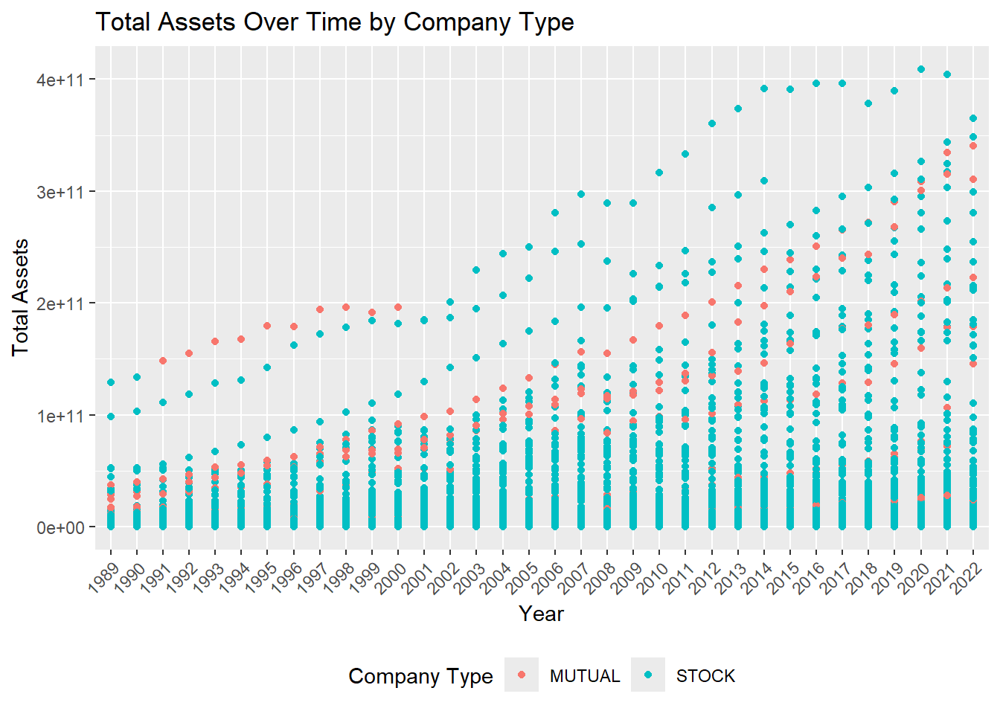
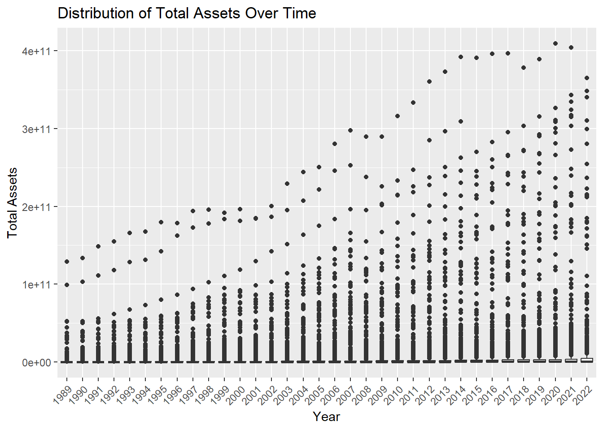
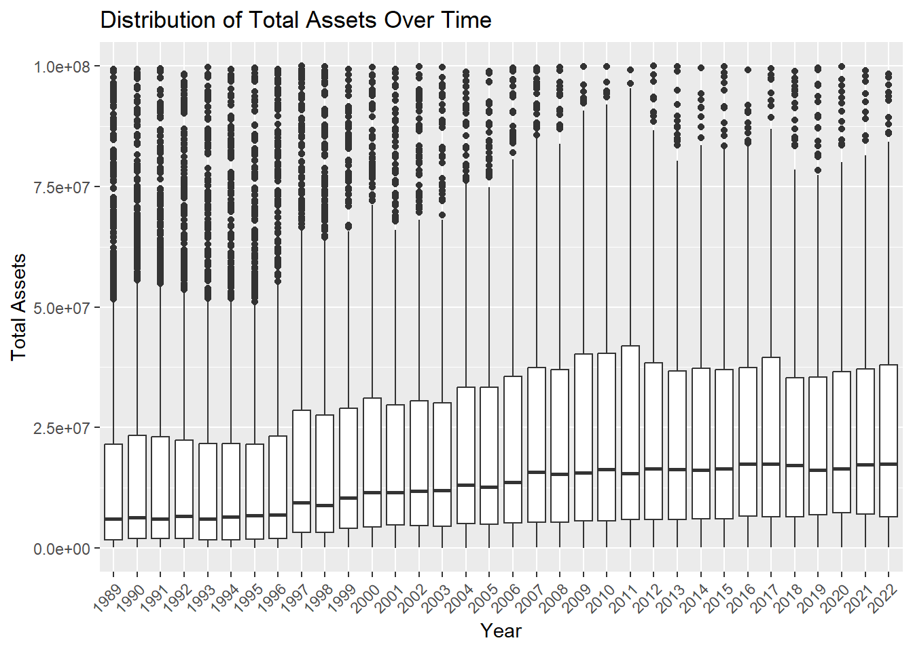
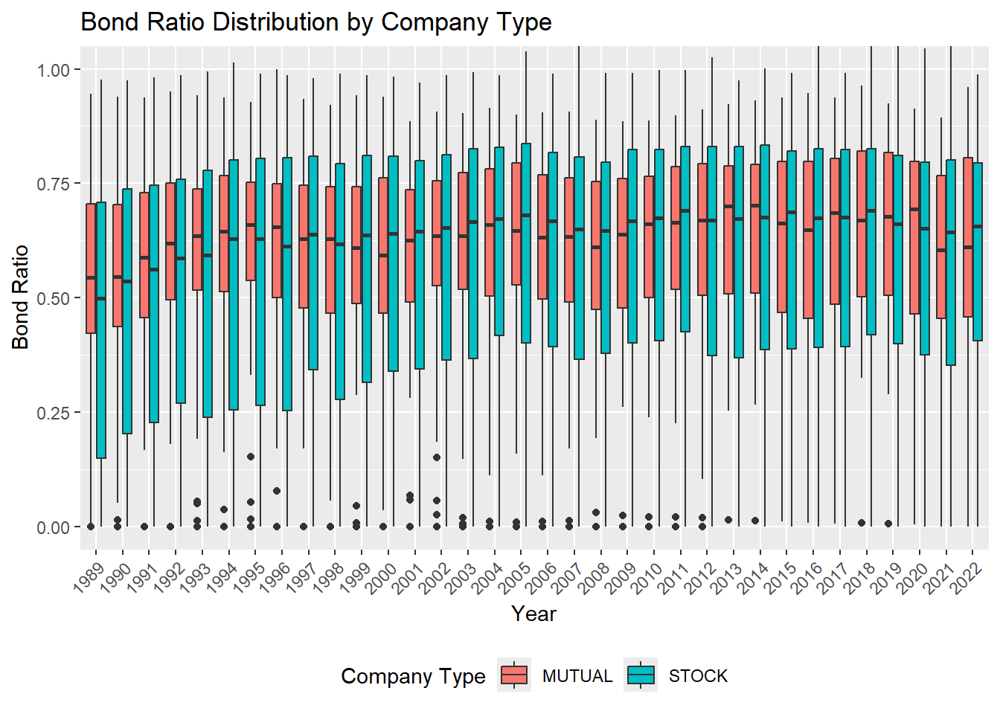
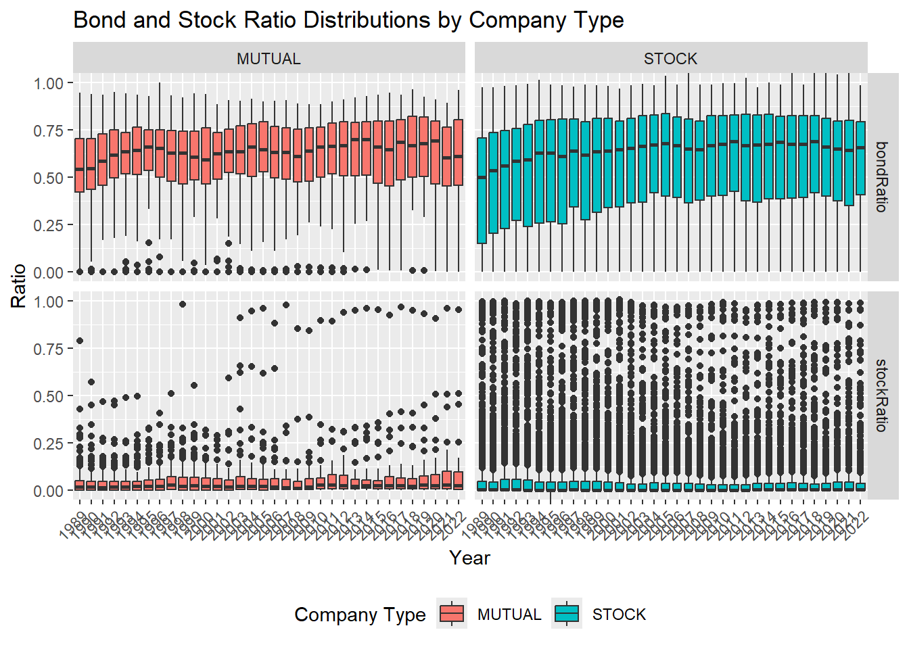
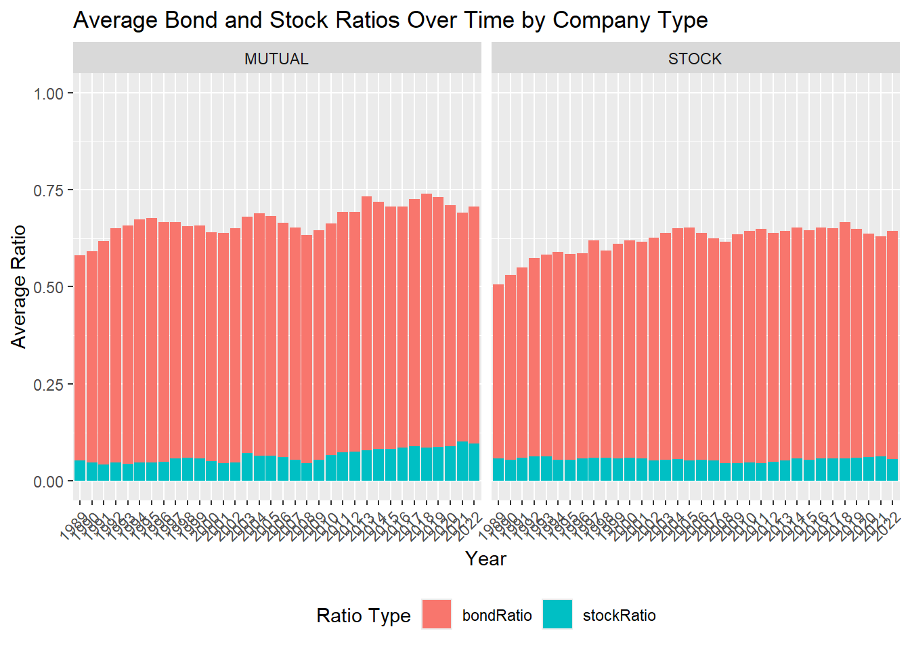

RMI 4226 Risk and Insurance Data Analytics – Fall 2025
Objective: This assignment aims to enhance your skills in data manipulation, specifically in reshaping data between long and wide formats, and in creating effective visualizations using ggplot2. By completing this exercise, you will learn to prepare data to answer specific questions and use appropriate graphs to communicate your findings.
Dataset: We will be working with a dataset containing information about insurance company assets stored in “naic_asset.rta”. This dataset includes the following variables: COCODE (company code), COMPANY_NAME, COMPANY_TYPE_DESC (company type), CURRENT_YEAR (asset value), YEAR (reporting year), and LINE (line of business). The LINE variable includes “Bonds”, “CashHandDeposit”, “Stocks_Com”, and “Total”.
Data Preparation and Reshaping:
1. Data Loading and Filtering:
Load the naic_asset.rta dataset.
Select the following columns: COCODE, COMPANY_NAME, COMPANY_TYPE_DESC, zCURRENT_YEAR, YEAR, and LINE.
Filter the data to retain only the rows where the LINE variable is either “Bonds”, “CashHandDeposit”, “Stocks_Com”, or “Total”.
Store the resulting data frame as longdata.
rm(list =ls())library(tidyverse)
Warning: package 'tidyverse' was built under R version 4.5.3
Warning: package 'dplyr' was built under R version 4.5.3
Warning: package 'lubridate' was built under R version 4.5.3
── Attaching core tidyverse packages ──────────────────────── tidyverse 2.0.0 ──
✔ dplyr 1.2.1 ✔ readr 2.1.6
✔ forcats 1.0.1 ✔ stringr 1.6.0
✔ ggplot2 4.0.1 ✔ tibble 3.3.0
✔ lubridate 1.9.5 ✔ tidyr 1.3.2
✔ purrr 1.2.0
── Conflicts ────────────────────────────────────────── tidyverse_conflicts() ──
✖ dplyr::filter() masks stats::filter()
✖ dplyr::lag() masks stats::lag()
ℹ Use the conflicted package (<http://conflicted.r-lib.org/>) to force all conflicts to become errors
Transform the longdata from its current long format to a wide format.
Use the unique values in the LINE column (“Bonds”, “CashHandDeposit”, “Stocks_Com”, “Total”) as the names of the new columns (i.e., “Bonds”, “CashHandDeposit”, “Stocks_Com”, and “Total”).
Populate these new columns with the values from the CURRENT_YEAR column.
Retain all the other columns COCODE, COMPANY_NAME, COMPANY_TYPE_DESC, and YEAR.
Make sure all observations have a positive (non-zero) total assets (Total).
3. Creating Ratio Variables and Converting Data Types:
Within widedata, calculate two new variables:
bondRatio: Compute this by dividing the values in the Bonds column by the corresponding values in the Total column.
stockRatio: Compute this by dividing the values in the Stocks_Com column by the corresponding values in the Total column.
Convert both the YEAR and COMPANY_TYPE_DESC columns into factors.
widedata<- widedata |>mutate( #Bonds = Bonds/1000, # present bond in thousandbondRatio = Bonds/Total,stockRatio = Stocks_Com/Total,YEAR =factor(YEAR),COMPANY_TYPE_DESC =factor(COMPANY_TYPE_DESC))
4. Pivoting back to Long Format:
Transform the widedata back to a long format.
Combine all columns except COCODE, YEAR, COMPANY_NAME, and COMPANY_TYPE_DESC into two columns: a name column and a value column.
The name column should contain the original column names that were transformed (Bonds, CashHandDeposit, Stocks_Com, Total, bondRatio, stockRatio), and the value column should contain the corresponding values.
Enhance the point chart from the previous step by adding color to differentiate the trend of total assets across different company types (COMPANY_TYPE_DESC).
Keep the filter for total assets (name equal to “Total”).
Tilt the x-axis labels by 45 degrees and move the legend to the bottom of the plot for better readability.
longdata |>filter(name =="Total") |>ggplot(aes(x = YEAR,y = value,color = COMPANY_TYPE_DESC)) +geom_point() +labs(title ="Total Assets Over Time by Company Type",x ="Year",y ="Total Assets",color ="Company Type") +theme(axis.text.x =element_text(angle =45,hjust =1),legend.position ="bottom")

7. Analyzing Total Asset Distribution Over Time:
Create a box plot to visualize the distribution of total assets (value) for each year (YEAR).
Filter the longdata to include only the rows where name is equal to “Total”.
Tilt the x-axis labels by 45 degrees.
longdata |>filter(name =="Total") |>ggplot(aes(x = YEAR, y = value)) +geom_boxplot() +labs(title ="Distribution of Total Assets Over Time",x ="Year",y ="Total Assets") +theme(axis.text.x =element_text(angle =45,hjust =1))

8. Focusing on the Total Asset Distribution:
Recreate the box plot from the previous step but this time add a ylim() function to zoom into the distribution, setting the y-axis limits to range from 0 to 108.
longdata |>filter(name =="Total") |>ggplot(aes(x = YEAR, y = value)) +geom_boxplot() +ylim(0, 10^8) +labs(title ="Distribution of Total Assets Over Time",x ="Year",y ="Total Assets") +theme(axis.text.x =element_text(angle =45,hjust =1))
Warning: Removed 16708 rows containing non-finite outside the scale range
(`stat_boxplot()`).

9. Analyzing Bond Ratio Distribution by Company Type:
Create a box plot to show the distribution of the bondRatio for each year (YEAR), coloring the boxes based on COMPANY_TYPE_DESC.
Filter longdata to include only rows where the name variable is “bondRatio”.
Set the y-axis limits from 0 to 1, and tilt x-axis labels by 45 degrees.
Move the legend to the bottom of the plot for better readability.
longdata |>filter(name =="bondRatio") |>ggplot(aes(x = YEAR,y = value,fill = COMPANY_TYPE_DESC)) +geom_boxplot() +coord_cartesian(ylim =c(0, 1)) +labs(title ="Bond Ratio Distribution by Company Type",x ="Year",y ="Bond Ratio",fill ="Company Type") +theme(axis.text.x =element_text(angle =45,hjust =1),legend.position ="bottom")

10. Comparing Bond and Stock Ratio Distributions by Company Type:
Create a faceted box plot to compare the distribution of bondRatio and stockRatio over the years, across different company types.
Filter longdata to include only rows where the name variable is either “bondRatio” or “stockRatio”.
Set the y-axis limits from 0 to 1. Tilt x-axis labels by 45 degrees.
Facet the plot by both the name column (to distinguish between bond ratio and stock ratio) and the COMPANY_TYPE_DESC column.
Move the legend to the bottom of the plot for better readability.
longdata |>filter( name %in%c("bondRatio", "stockRatio")) |>ggplot(aes(x = YEAR,y = value,fill = COMPANY_TYPE_DESC)) +geom_boxplot() +coord_cartesian(ylim =c(0, 1)) +facet_grid( name ~ COMPANY_TYPE_DESC) +labs(title ="Bond and Stock Ratio Distributions by Company Type",x ="Year",y ="Ratio",fill ="Company Type") +theme(axis.text.x =element_text(angle =45,hjust =1),legend.position ="bottom")

11. Visualizing Average Bond and Stock Ratios with Stacked Bars:
Filter longdata to include only “bondRatio” and “stockRatio”.
Transform the data back to long format, with the mean bondRatio and stockRatio values in a single value column, and the type of ratio in a name column.
Create a stacked bar chart showing the average bondRatio and stockRatio over time for each company type.
Use YEAR as the x-axis and the value as the y-axis.
Color the bars based on the name (bond ratio vs. stock ratio).
Facet the plot by COMPANY_TYPE_DESC.
Tilt x-axis labels by 45 degrees and position the legend at the bottom.
Set y-axis limits from 0 to 1.
Add an appropriate title and labels for the x and y axis.
meanRatioData |>ggplot(aes(x = YEAR,y = value,fill = name)) +geom_bar(stat ="identity") +facet_wrap(~ COMPANY_TYPE_DESC) +ylim(0, 1) +labs(title ="Average Bond and Stock Ratios Over Time by Company Type",x ="Year",y ="Average Ratio",fill ="Ratio Type") +theme(axis.text.x =element_text (angle =45,hjust =1),legend.position ="bottom")

12. Briefly describe what you found going through these steps to visualize the data.
The visualizations showed the total assests varied widely across insurance companies. Some companies have significantly larger assest holding than others. Bonds tend to make up a larger share of insurers portfolios compared to common stock. Overall, investment allocation patters remained stable over time with minor year to year fluctution.